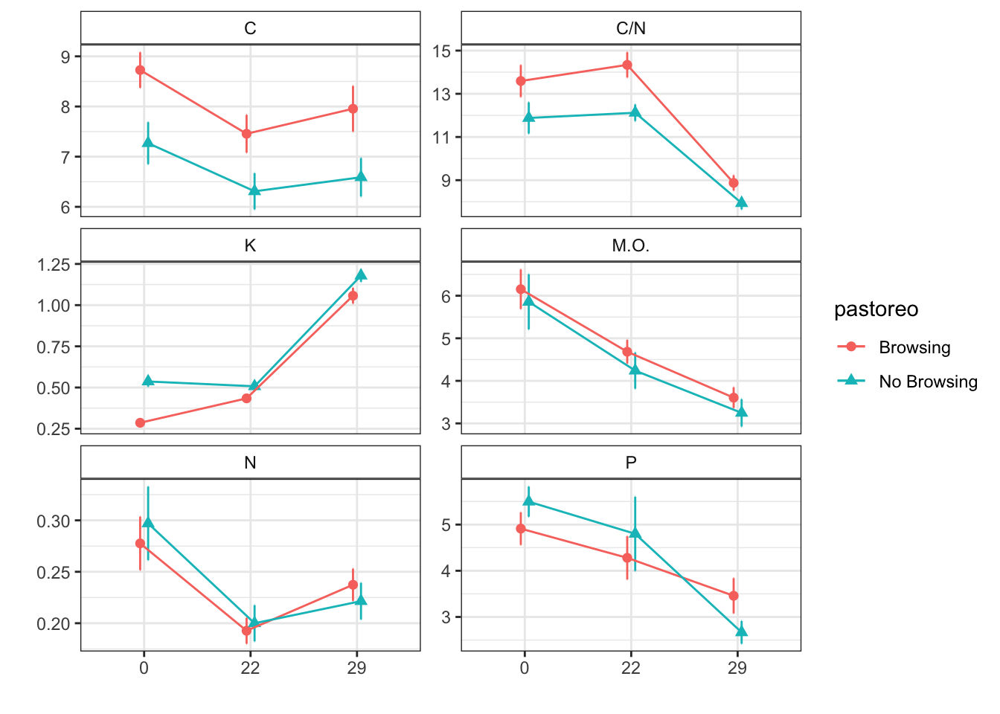

Browsings effects on Soil propierties after fire (no control)
ajpelu
2021-09-08
Last updated: 2021-09-14
Checks: 7 0
Knit directory: soil_alcontar/
This reproducible R Markdown analysis was created with workflowr (version 1.6.2). The Checks tab describes the reproducibility checks that were applied when the results were created. The Past versions tab lists the development history.
Great! Since the R Markdown file has been committed to the Git repository, you know the exact version of the code that produced these results.
Great job! The global environment was empty. Objects defined in the global environment can affect the analysis in your R Markdown file in unknown ways. For reproduciblity it’s best to always run the code in an empty environment.
The command set.seed(20210907) was run prior to running the code in the R Markdown file. Setting a seed ensures that any results that rely on randomness, e.g. subsampling or permutations, are reproducible.
Great job! Recording the operating system, R version, and package versions is critical for reproducibility.
Nice! There were no cached chunks for this analysis, so you can be confident that you successfully produced the results during this run.
Great job! Using relative paths to the files within your workflowr project makes it easier to run your code on other machines.
Great! You are using Git for version control. Tracking code development and connecting the code version to the results is critical for reproducibility.
The results in this page were generated with repository version b2f355b. See the Past versions tab to see a history of the changes made to the R Markdown and HTML files.
Note that you need to be careful to ensure that all relevant files for the analysis have been committed to Git prior to generating the results (you can use wflow_publish or wflow_git_commit). workflowr only checks the R Markdown file, but you know if there are other scripts or data files that it depends on. Below is the status of the Git repository when the results were generated:
Ignored files:
Ignored: .RData
Ignored: .Rhistory
Ignored: .Rproj.user/C369E4F4/
Ignored: .Rproj.user/shared/notebooks/0EF54E14-NOBORRAR/
Ignored: .Rproj.user/shared/notebooks/27FF967E-analysis_pre_post_epoca/
Ignored: .Rproj.user/shared/notebooks/33E25F73-analysis_resilience/
Ignored: .Rproj.user/shared/notebooks/3F603CAC-map/
Ignored: .Rproj.user/shared/notebooks/4672E36C-study_area/
Ignored: .Rproj.user/shared/notebooks/4A68381F-general_overview_soils/
Ignored: .Rproj.user/shared/notebooks/4E13660A-temporal_comparison/
Ignored: .Rproj.user/shared/notebooks/5D919DFD-analysis_zona_time_postFire/
Ignored: .Rproj.user/shared/notebooks/827D0727-analysis_pre_post/
Ignored: .Rproj.user/shared/notebooks/A3F813C2-index/
Ignored: .Rproj.user/shared/notebooks/D4E3AA10-analysis_zona_time/
Untracked files:
Untracked: analysis/NOBORRAR.Rmd
Untracked: analysis/analysis_pre_post_cache/
Untracked: analysis/test.Rmd
Untracked: data/spatial/01_EP_ANDALUCIA/EP_Andalucía.shp.DESKTOP-CKNNEUJ.5492.5304.sr.lock
Untracked: data/spatial/lucdeme/
Untracked: data/spatial/parcelas/GEO_PARCELAS.shp.DESKTOP-CKNNEUJ.5492.5304.sr.lock
Untracked: data/spatial/test/
Untracked: map.Rmd
Untracked: output/anovas_pre_post_epoca.csv
Untracked: output/anovas_zona_time.csv
Untracked: output/anovas_zona_time_postFire.csv
Untracked: scripts/generate_3dview.R
Unstaged changes:
Modified: analysis/_site.yml
Modified: data/spatial/.DS_Store
Modified: data/spatial/01_EP_ANDALUCIA/EP_Andalucía.dbf
Deleted: index.Rmd
Modified: scripts/00_prepare_data.R
Modified: temporal_comparison.Rmd
Note that any generated files, e.g. HTML, png, CSS, etc., are not included in this status report because it is ok for generated content to have uncommitted changes.
These are the previous versions of the repository in which changes were made to the R Markdown (analysis/analysis_zona_time_postFire.Rmd) and HTML (docs/analysis_zona_time_postFire.html) files. If you’ve configured a remote Git repository (see ?wflow_git_remote), click on the hyperlinks in the table below to view the files as they were in that past version.
| File | Version | Author | Date | Message |
|---|---|---|---|---|
| Rmd | b2f355b | ajpelu | 2021-09-14 | add analysis |
Introduction
Analysis of temporal evolution of soil parameters along time.
Only for Autumn treatment (i.e. zona == “P”; zona == “NP”)
Interpret zona as “grazing effect”:
- zona == “P” corresponds to Browsing
- zona == “NP” corresponds to No Browsing
Prepare data
raw_soil <- readxl::read_excel(here::here("data/Resultados_Suelos_2018_2021_v2.xlsx"),
sheet = "SEGUIMIENTO_SUELOS_sin_ouliers") %>% janitor::clean_names() %>% mutate(treatment_name = case_when(str_detect(geo_parcela_nombre,
"NP_") ~ "Autumn Burning / No Browsing", str_detect(geo_parcela_nombre, "PR_") ~
"Spring Burning / Browsing", str_detect(geo_parcela_nombre, "P_") ~ "Autumn Burning / Browsing"),
zona = case_when(str_detect(geo_parcela_nombre, "NP_") ~ "QOt_NP", str_detect(geo_parcela_nombre,
"PR_") ~ "QPr_P", str_detect(geo_parcela_nombre, "P_") ~ "QOt_P"), fecha = lubridate::ymd(fecha),
pre_post_quema = case_when(pre_post_quema == "Prequema" ~ "0 preQuema", pre_post_quema ==
"Postquema" ~ "1 postQuema"))- Compute date as months after fire
autumn_fire <- lubridate::ymd("2018-12-18")
soil <- raw_soil %>% filter(zona != "QPr_P") %>% filter(fecha != "2018-12-11") %>%
mutate(zona = as.factor(zona)) %>% mutate(meses = as.factor(as.character(lubridate::interval(autumn_fire,
lubridate::ymd(fecha))%/%months(1)))) %>% mutate(pastoreo = as.factor(case_when(zona ==
"QOt_P" ~ "Browsing", zona == "QOt_NP" ~ "No Browsing"))) %>% relocate(pastoreo,
fecha, meses) %>% dplyr::select(-pre_post_quema, -tratamiento)
xtabs(~meses + pastoreo, data = soil) pastoreo
meses Browsing No Browsing
0 24 24
22 25 25
29 24 24# sss <- soil %>% dplyr::select(meses, pastoreo, ca_percent)Modelize
- For each response variable, the approach modelling is
\(Y \sim pastoreo (Browsing|NoBrowsing)+ Fecha(0|22|29) + zona \times Fecha\)
- using the “(1|pastoreo:geo_parcela_nombre)” as nested random effects
Humedad
humedad ~ pastoreo * meses + (1 | pastoreo:geo_parcela_nombre)Type III Analysis of Variance Table with Satterthwaite's method
Sum Sq Mean Sq NumDF DenDF F value Pr(>F)
pastoreo 4.60 4.597 1 6.005 0.6233 0.4598622
meses 362.22 181.110 2 133.044 24.5534 8.395e-10 ***
pastoreo:meses 132.90 66.452 2 133.044 9.0090 0.0002141 ***
---
Signif. codes: 0 '***' 0.001 '**' 0.01 '*' 0.05 '.' 0.1 ' ' 1Post-hoc
$`emmeans of pastoreo`
pastoreo emmean SE df lower.CL upper.CL
Browsing 11.1 0.883 6.01 8.96 13.3
No Browsing 10.1 0.882 5.99 7.98 12.3
Results are averaged over the levels of: meses
Degrees-of-freedom method: kenward-roger
Confidence level used: 0.95
$`pairwise differences of pastoreo`
1 estimate SE df t.ratio p.value
Browsing - No Browsing 0.985 1.25 6 0.789 0.4599
Results are averaged over the levels of: meses
Degrees-of-freedom method: kenward-roger $`emmeans of meses`
meses emmean SE df lower.CL upper.CL
0 12.13 0.702 9.55 10.55 13.7
22 8.47 0.697 9.33 6.90 10.0
29 11.30 0.704 9.69 9.72 12.9
Results are averaged over the levels of: pastoreo
Degrees-of-freedom method: kenward-roger
Confidence level used: 0.95
$`pairwise differences of meses`
1 estimate SE df t.ratio p.value
0 - 22 3.661 0.549 133 6.668 <.0001
0 - 29 0.827 0.558 133 1.483 0.3023
22 - 29 -2.834 0.552 133 -5.131 <.0001
Results are averaged over the levels of: pastoreo
Degrees-of-freedom method: kenward-roger
P value adjustment: tukey method for comparing a family of 3 estimates $`emmeans of meses | pastoreo`
pastoreo = Browsing:
meses emmean SE df lower.CL upper.CL
0 11.39 0.992 9.55 9.17 13.6
22 10.05 0.986 9.33 7.83 12.3
29 11.93 0.999 9.82 9.69 14.2
pastoreo = No Browsing:
meses emmean SE df lower.CL upper.CL
0 12.86 0.992 9.55 10.64 15.1
22 6.88 0.986 9.33 4.66 9.1
29 10.67 0.992 9.55 8.45 12.9
Degrees-of-freedom method: kenward-roger
Confidence level used: 0.95
$`pairwise differences of meses | pastoreo`
pastoreo = Browsing:
2 estimate SE df t.ratio p.value
0 - 22 1.339 0.776 133 1.725 0.1996
0 - 29 -0.533 0.793 133 -0.673 0.7798
22 - 29 -1.873 0.786 133 -2.383 0.0485
pastoreo = No Browsing:
2 estimate SE df t.ratio p.value
0 - 22 5.983 0.776 133 7.705 <.0001
0 - 29 2.187 0.784 133 2.789 0.0166
22 - 29 -3.796 0.776 133 -4.889 <.0001
Degrees-of-freedom method: kenward-roger
P value adjustment: tukey method for comparing a family of 3 estimates CIC
cic ~ pastoreo * meses + (1 | pastoreo:geo_parcela_nombre)Type III Analysis of Variance Table with Satterthwaite's method
Sum Sq Mean Sq NumDF DenDF F value Pr(>F)
pastoreo 4.21 4.210 1 5.979 1.3273 0.2933
meses 435.43 217.716 2 133.999 68.6311 <2e-16 ***
pastoreo:meses 2.97 1.485 2 133.999 0.4682 0.6271
---
Signif. codes: 0 '***' 0.001 '**' 0.01 '*' 0.05 '.' 0.1 ' ' 1Post-hoc
$`emmeans of pastoreo`
pastoreo emmean SE df lower.CL upper.CL
Browsing 16.8 0.555 6 15.5 18.2
No Browsing 15.9 0.555 6 14.6 17.3
Results are averaged over the levels of: meses
Degrees-of-freedom method: kenward-roger
Confidence level used: 0.95
$`pairwise differences of pastoreo`
1 estimate SE df t.ratio p.value
Browsing - No Browsing 0.904 0.784 6 1.152 0.2931
Results are averaged over the levels of: meses
Degrees-of-freedom method: kenward-roger $`emmeans of meses`
meses emmean SE df lower.CL upper.CL
0 15.3 0.445 9.92 14.3 16.3
22 15.0 0.442 9.67 14.0 16.0
29 18.8 0.445 9.92 17.8 19.8
Results are averaged over the levels of: pastoreo
Degrees-of-freedom method: kenward-roger
Confidence level used: 0.95
$`pairwise differences of meses`
1 estimate SE df t.ratio p.value
0 - 22 0.325 0.360 134 0.903 0.6395
0 - 29 -3.500 0.364 134 -9.627 <.0001
22 - 29 -3.825 0.360 134 -10.624 <.0001
Results are averaged over the levels of: pastoreo
Degrees-of-freedom method: kenward-roger
P value adjustment: tukey method for comparing a family of 3 estimates $`emmeans of meses | pastoreo`
pastoreo = Browsing:
meses emmean SE df lower.CL upper.CL
0 15.6 0.630 9.92 14.2 17.0
22 15.6 0.626 9.67 14.2 17.0
29 19.4 0.630 9.92 18.0 20.8
pastoreo = No Browsing:
meses emmean SE df lower.CL upper.CL
0 15.1 0.630 9.92 13.7 16.5
22 14.4 0.626 9.67 13.0 15.8
29 18.3 0.630 9.92 16.9 19.7
Degrees-of-freedom method: kenward-roger
Confidence level used: 0.95
$`pairwise differences of meses | pastoreo`
pastoreo = Browsing:
2 estimate SE df t.ratio p.value
0 - 22 0.0111 0.509 134 0.022 0.9997
0 - 29 -3.7917 0.514 134 -7.375 <.0001
22 - 29 -3.8027 0.509 134 -7.468 <.0001
pastoreo = No Browsing:
2 estimate SE df t.ratio p.value
0 - 22 0.6390 0.509 134 1.255 0.4231
0 - 29 -3.2083 0.514 134 -6.240 <.0001
22 - 29 -3.8474 0.509 134 -7.556 <.0001
Degrees-of-freedom method: kenward-roger
P value adjustment: tukey method for comparing a family of 3 estimates C
c_percent ~ pastoreo * meses + (1 | pastoreo:geo_parcela_nombre)Type III Analysis of Variance Table with Satterthwaite's method
Sum Sq Mean Sq NumDF DenDF F value Pr(>F)
pastoreo 2.9927 2.9927 1 5.995 1.5033 0.2661352
meses 30.1228 15.0614 2 134.001 7.5658 0.0007706 ***
pastoreo:meses 0.5280 0.2640 2 134.001 0.1326 0.8759091
---
Signif. codes: 0 '***' 0.001 '**' 0.01 '*' 0.05 '.' 0.1 ' ' 1Post-hoc
$`emmeans of pastoreo`
pastoreo emmean SE df lower.CL upper.CL
Browsing 8.06 0.768 6 6.18 9.94
No Browsing 6.73 0.768 6 4.85 8.61
Results are averaged over the levels of: meses
Degrees-of-freedom method: kenward-roger
Confidence level used: 0.95
$`pairwise differences of pastoreo`
1 estimate SE df t.ratio p.value
Browsing - No Browsing 1.33 1.09 6 1.226 0.2661
Results are averaged over the levels of: meses
Degrees-of-freedom method: kenward-roger $`emmeans of meses`
meses emmean SE df lower.CL upper.CL
0 8.00 0.568 7.18 6.66 9.33
22 6.91 0.567 7.11 5.57 8.24
29 7.27 0.568 7.18 5.94 8.61
Results are averaged over the levels of: pastoreo
Degrees-of-freedom method: kenward-roger
Confidence level used: 0.95
$`pairwise differences of meses`
1 estimate SE df t.ratio p.value
0 - 22 1.092 0.285 134 3.830 0.0006
0 - 29 0.726 0.288 134 2.519 0.0343
22 - 29 -0.367 0.285 134 -1.286 0.4053
Results are averaged over the levels of: pastoreo
Degrees-of-freedom method: kenward-roger
P value adjustment: tukey method for comparing a family of 3 estimates $`emmeans of meses | pastoreo`
pastoreo = Browsing:
meses emmean SE df lower.CL upper.CL
0 8.73 0.804 7.18 6.84 10.62
22 7.49 0.802 7.11 5.60 9.38
29 7.96 0.804 7.18 6.07 9.85
pastoreo = No Browsing:
meses emmean SE df lower.CL upper.CL
0 7.27 0.804 7.18 5.38 9.16
22 6.32 0.802 7.11 4.43 8.21
29 6.59 0.804 7.18 4.70 8.48
Degrees-of-freedom method: kenward-roger
Confidence level used: 0.95
$`pairwise differences of meses | pastoreo`
pastoreo = Browsing:
2 estimate SE df t.ratio p.value
0 - 22 1.236 0.403 134 3.064 0.0074
0 - 29 0.772 0.407 134 1.895 0.1442
22 - 29 -0.464 0.403 134 -1.151 0.4844
pastoreo = No Browsing:
2 estimate SE df t.ratio p.value
0 - 22 0.949 0.403 134 2.353 0.0522
0 - 29 0.680 0.407 134 1.668 0.2212
22 - 29 -0.269 0.403 134 -0.668 0.7825
Degrees-of-freedom method: kenward-roger
P value adjustment: tukey method for comparing a family of 3 estimates Fe
fe_percent ~ pastoreo * meses + (1 | pastoreo:geo_parcela_nombre)Fitting one lmer() model. [DONE]
Calculating p-values. [DONE]Mixed Model Anova Table (Type 3 tests, KR-method)
Model: fe_percent ~ pastoreo * meses + (1 | pastoreo:geo_parcela_nombre)
Data: df_model
num Df den Df F Pr(>F)
pastoreo 1 6 0.3182 0.59314
meses 2 134 195.2049 < 2e-16 ***
pastoreo:meses 2 134 3.3444 0.03825 *
---
Signif. codes: 0 '***' 0.001 '**' 0.01 '*' 0.05 '.' 0.1 ' ' 1Post-hoc
$`emmeans of pastoreo`
pastoreo emmean SE df asymp.LCL asymp.UCL
Browsing 0.550 0.0555 Inf 0.442 0.659
No Browsing 0.467 0.0604 Inf 0.349 0.586
Results are averaged over the levels of: meses
Results are given on the inverse (not the response) scale.
Confidence level used: 0.95
$`pairwise differences of pastoreo`
1 estimate SE df z.ratio p.value
Browsing - No Browsing 0.083 0.082 Inf 1.013 0.3110
Results are averaged over the levels of: meses
Note: contrasts are still on the inverse scale $`emmeans of meses`
meses emmean SE df asymp.LCL asymp.UCL
0 0.586 0.0416 Inf 0.504 0.667
22 0.541 0.0414 Inf 0.459 0.622
29 0.400 0.0412 Inf 0.319 0.481
Results are averaged over the levels of: pastoreo
Results are given on the inverse (not the response) scale.
Confidence level used: 0.95
$`pairwise differences of meses`
1 estimate SE df z.ratio p.value
0 - 22 0.0451 0.01029 Inf 4.386 <.0001
0 - 29 0.1858 0.00917 Inf 20.265 <.0001
22 - 29 0.1406 0.00849 Inf 16.570 <.0001
Results are averaged over the levels of: pastoreo
Note: contrasts are still on the inverse scale
P value adjustment: tukey method for comparing a family of 3 estimates $`emmeans of meses | pastoreo`
pastoreo = Browsing:
meses emmean SE df asymp.LCL asymp.UCL
0 0.636 0.0563 Inf 0.525 0.746
22 0.568 0.0560 Inf 0.458 0.678
29 0.447 0.0557 Inf 0.338 0.556
pastoreo = No Browsing:
meses emmean SE df asymp.LCL asymp.UCL
0 0.536 0.0611 Inf 0.416 0.656
22 0.513 0.0610 Inf 0.393 0.633
29 0.353 0.0606 Inf 0.234 0.472
Results are given on the inverse (not the response) scale.
Confidence level used: 0.95
$`pairwise differences of meses | pastoreo`
pastoreo = Browsing:
2 estimate SE df z.ratio p.value
0 - 22 0.0674 0.0148 Inf 4.558 <.0001
0 - 29 0.1886 0.0135 Inf 14.020 <.0001
22 - 29 0.1212 0.0121 Inf 10.041 <.0001
pastoreo = No Browsing:
2 estimate SE df z.ratio p.value
0 - 22 0.0228 0.0143 Inf 1.596 0.2474
0 - 29 0.1829 0.0125 Inf 14.686 <.0001
22 - 29 0.1601 0.0119 Inf 13.411 <.0001
Note: contrasts are still on the inverse scale
P value adjustment: tukey method for comparing a family of 3 estimates K
k_percent ~ pastoreo * meses + (1 | pastoreo:geo_parcela_nombre)Fitting one lmer() model. [DONE]
Calculating p-values. [DONE]Mixed Model Anova Table (Type 3 tests, KR-method)
Model: k_percent ~ pastoreo * meses + (1 | pastoreo:geo_parcela_nombre)
Data: df_model
num Df den Df F Pr(>F)
pastoreo 1 6.00 3.5557 0.108303
meses 2 134.01 477.4712 < 2.2e-16 ***
pastoreo:meses 2 134.01 6.3832 0.002249 **
---
Signif. codes: 0 '***' 0.001 '**' 0.01 '*' 0.05 '.' 0.1 ' ' 1Post-hoc
$`emmeans of pastoreo`
pastoreo emmean SE df asymp.LCL asymp.UCL
Browsing 2.32 0.140 Inf 2.05 2.60
No Browsing 1.59 0.139 Inf 1.32 1.86
Results are averaged over the levels of: meses
Results are given on the inverse (not the response) scale.
Confidence level used: 0.95
$`pairwise differences of pastoreo`
1 estimate SE df z.ratio p.value
Browsing - No Browsing 0.731 0.196 Inf 3.725 0.0002
Results are averaged over the levels of: meses
Note: contrasts are still on the inverse scale $`emmeans of meses`
meses emmean SE df asymp.LCL asymp.UCL
0 2.722 0.1273 Inf 2.473 2.97
22 2.183 0.1130 Inf 1.962 2.40
29 0.963 0.0962 Inf 0.775 1.15
Results are averaged over the levels of: pastoreo
Results are given on the inverse (not the response) scale.
Confidence level used: 0.95
$`pairwise differences of meses`
1 estimate SE df z.ratio p.value
0 - 22 0.539 0.1111 Inf 4.852 <.0001
0 - 29 1.759 0.0935 Inf 18.813 <.0001
22 - 29 1.220 0.0725 Inf 16.837 <.0001
Results are averaged over the levels of: pastoreo
Note: contrasts are still on the inverse scale
P value adjustment: tukey method for comparing a family of 3 estimates $`emmeans of meses | pastoreo`
pastoreo = Browsing:
meses emmean SE df asymp.LCL asymp.UCL
0 3.554 0.200 Inf 3.163 3.95
22 2.372 0.160 Inf 2.058 2.69
29 1.040 0.132 Inf 0.782 1.30
pastoreo = No Browsing:
meses emmean SE df asymp.LCL asymp.UCL
0 1.891 0.157 Inf 1.583 2.20
22 1.995 0.159 Inf 1.684 2.31
29 0.886 0.138 Inf 0.615 1.16
Results are given on the inverse (not the response) scale.
Confidence level used: 0.95
$`pairwise differences of meses | pastoreo`
pastoreo = Browsing:
2 estimate SE df z.ratio p.value
0 - 22 1.182 0.1867 Inf 6.332 <.0001
0 - 29 2.514 0.1629 Inf 15.434 <.0001
22 - 29 1.331 0.1096 Inf 12.141 <.0001
pastoreo = No Browsing:
2 estimate SE df z.ratio p.value
0 - 22 -0.104 0.1204 Inf -0.865 0.6622
0 - 29 1.005 0.0919 Inf 10.937 <.0001
22 - 29 1.109 0.0947 Inf 11.706 <.0001
Note: contrasts are still on the inverse scale
P value adjustment: tukey method for comparing a family of 3 estimates Mg
mg_percent ~ pastoreo * meses + (1 | pastoreo:geo_parcela_nombre)Fitting one lmer() model. [DONE]
Calculating p-values. [DONE]Mixed Model Anova Table (Type 3 tests, KR-method)
Model: mg_percent ~ pastoreo * meses + (1 | pastoreo:geo_parcela_nombre)
Data: df_model
num Df den Df F Pr(>F)
pastoreo 1 6 0.7514 0.419348
meses 2 134 3.1375 0.046594 *
pastoreo:meses 2 134 4.7869 0.009817 **
---
Signif. codes: 0 '***' 0.001 '**' 0.01 '*' 0.05 '.' 0.1 ' ' 1Post-hoc
$`emmeans of pastoreo`
pastoreo emmean SE df asymp.LCL asymp.UCL
Browsing 0.949 0.143 Inf 0.669 1.23
No Browsing 0.760 0.152 Inf 0.462 1.06
Results are averaged over the levels of: meses
Results are given on the inverse (not the response) scale.
Confidence level used: 0.95
$`pairwise differences of pastoreo`
1 estimate SE df z.ratio p.value
Browsing - No Browsing 0.189 0.209 Inf 0.907 0.3647
Results are averaged over the levels of: meses
Note: contrasts are still on the inverse scale $`emmeans of meses`
meses emmean SE df asymp.LCL asymp.UCL
0 0.869 0.107 Inf 0.660 1.08
22 0.899 0.107 Inf 0.689 1.11
29 0.795 0.106 Inf 0.587 1.00
Results are averaged over the levels of: pastoreo
Results are given on the inverse (not the response) scale.
Confidence level used: 0.95
$`pairwise differences of meses`
1 estimate SE df z.ratio p.value
0 - 22 -0.0295 0.0403 Inf -0.731 0.7451
0 - 29 0.0742 0.0376 Inf 1.974 0.1188
22 - 29 0.1037 0.0377 Inf 2.748 0.0165
Results are averaged over the levels of: pastoreo
Note: contrasts are still on the inverse scale
P value adjustment: tukey method for comparing a family of 3 estimates $`emmeans of meses | pastoreo`
pastoreo = Browsing:
meses emmean SE df asymp.LCL asymp.UCL
0 1.033 0.149 Inf 0.742 1.32
22 0.981 0.147 Inf 0.692 1.27
29 0.833 0.145 Inf 0.548 1.12
pastoreo = No Browsing:
meses emmean SE df asymp.LCL asymp.UCL
0 0.706 0.154 Inf 0.404 1.01
22 0.817 0.155 Inf 0.513 1.12
29 0.757 0.155 Inf 0.454 1.06
Results are given on the inverse (not the response) scale.
Confidence level used: 0.95
$`pairwise differences of meses | pastoreo`
pastoreo = Browsing:
2 estimate SE df z.ratio p.value
0 - 22 0.0516 0.0659 Inf 0.783 0.7134
0 - 29 0.1994 0.0612 Inf 3.259 0.0032
22 - 29 0.1478 0.0576 Inf 2.563 0.0280
pastoreo = No Browsing:
2 estimate SE df z.ratio p.value
0 - 22 -0.1106 0.0465 Inf -2.380 0.0456
0 - 29 -0.0511 0.0437 Inf -1.169 0.4717
22 - 29 0.0596 0.0487 Inf 1.223 0.4393
Note: contrasts are still on the inverse scale
P value adjustment: tukey method for comparing a family of 3 estimates C/N
c_n ~ pastoreo * meses + (1 | pastoreo:geo_parcela_nombre)Fitting one lmer() model. [DONE]
Calculating p-values. [DONE]Mixed Model Anova Table (Type 3 tests, KR-method)
Model: c_n ~ pastoreo * meses + (1 | pastoreo:geo_parcela_nombre)
Data: df_model
num Df den Df F Pr(>F)
pastoreo 1 6.0002 0.4479 0.5283
meses 2 133.0226 1.0502 0.3528
pastoreo:meses 2 133.0226 0.3729 0.6895Post-hoc
$`emmeans of pastoreo`
pastoreo emmean SE df asymp.LCL asymp.UCL
Browsing 0.0288 0.00412 Inf 0.0207 0.0368
No Browsing 0.0319 0.00400 Inf 0.0241 0.0397
Results are averaged over the levels of: meses
Results are given on the inverse (not the response) scale.
Confidence level used: 0.95
$`pairwise differences of pastoreo`
1 estimate SE df z.ratio p.value
Browsing - No Browsing -0.00314 0.00571 Inf -0.550 0.5826
Results are averaged over the levels of: meses
Note: contrasts are still on the inverse scale $`emmeans of meses`
meses emmean SE df asymp.LCL asymp.UCL
0 0.0302 0.00308 Inf 0.0241 0.0362
22 0.0289 0.00305 Inf 0.0230 0.0349
29 0.0319 0.00313 Inf 0.0258 0.0380
Results are averaged over the levels of: pastoreo
Results are given on the inverse (not the response) scale.
Confidence level used: 0.95
$`pairwise differences of meses`
1 estimate SE df z.ratio p.value
0 - 22 0.00124 0.00181 Inf 0.686 0.7719
0 - 29 -0.00172 0.00195 Inf -0.885 0.6499
22 - 29 -0.00296 0.00189 Inf -1.569 0.2593
Results are averaged over the levels of: pastoreo
Note: contrasts are still on the inverse scale
P value adjustment: tukey method for comparing a family of 3 estimates $`emmeans of meses | pastoreo`
pastoreo = Browsing:
meses emmean SE df asymp.LCL asymp.UCL
0 0.0290 0.00437 Inf 0.0204 0.0376
22 0.0265 0.00429 Inf 0.0181 0.0350
29 0.0308 0.00442 Inf 0.0221 0.0394
pastoreo = No Browsing:
meses emmean SE df asymp.LCL asymp.UCL
0 0.0313 0.00430 Inf 0.0229 0.0398
22 0.0313 0.00429 Inf 0.0229 0.0397
29 0.0330 0.00438 Inf 0.0244 0.0416
Results are given on the inverse (not the response) scale.
Confidence level used: 0.95
$`pairwise differences of meses | pastoreo`
pastoreo = Browsing:
2 estimate SE df z.ratio p.value
0 - 22 2.46e-03 0.00235 Inf 1.049 0.5462
0 - 29 -1.76e-03 0.00259 Inf -0.682 0.7740
22 - 29 -4.23e-03 0.00245 Inf -1.725 0.1959
pastoreo = No Browsing:
2 estimate SE df z.ratio p.value
0 - 22 1.41e-05 0.00274 Inf 0.005 1.0000
0 - 29 -1.68e-03 0.00291 Inf -0.578 0.8320
22 - 29 -1.70e-03 0.00287 Inf -0.591 0.8250
Note: contrasts are still on the inverse scale
P value adjustment: tukey method for comparing a family of 3 estimates MO
mo ~ pastoreo * meses + (1 | pastoreo:geo_parcela_nombre)Fitting one lmer() model. [DONE]
Calculating p-values. [DONE]Mixed Model Anova Table (Type 3 tests, KR-method)
Model: mo ~ pastoreo * meses + (1 | pastoreo:geo_parcela_nombre)
Data: df_model
num Df den Df F Pr(>F)
pastoreo 1 5.9992 0.4239 0.5391
meses 2 134.0502 20.5449 1.649e-08 ***
pastoreo:meses 2 134.0502 0.0116 0.9885
---
Signif. codes: 0 '***' 0.001 '**' 0.01 '*' 0.05 '.' 0.1 ' ' 1Post-hoc
$`emmeans of pastoreo`
pastoreo emmean SE df asymp.LCL asymp.UCL
Browsing 0.221 0.0221 Inf 0.177 0.264
No Browsing 0.246 0.0229 Inf 0.201 0.291
Results are averaged over the levels of: meses
Results are given on the inverse (not the response) scale.
Confidence level used: 0.95
$`pairwise differences of pastoreo`
1 estimate SE df z.ratio p.value
Browsing - No Browsing -0.0253 0.0316 Inf -0.802 0.4226
Results are averaged over the levels of: meses
Note: contrasts are still on the inverse scale $`emmeans of meses`
meses emmean SE df asymp.LCL asymp.UCL
0 0.173 0.0171 Inf 0.140 0.207
22 0.229 0.0190 Inf 0.192 0.266
29 0.297 0.0222 Inf 0.254 0.341
Results are averaged over the levels of: pastoreo
Results are given on the inverse (not the response) scale.
Confidence level used: 0.95
$`pairwise differences of meses`
1 estimate SE df z.ratio p.value
0 - 22 -0.0558 0.0162 Inf -3.437 0.0017
0 - 29 -0.1241 0.0199 Inf -6.250 <.0001
22 - 29 -0.0684 0.0216 Inf -3.166 0.0044
Results are averaged over the levels of: pastoreo
Note: contrasts are still on the inverse scale
P value adjustment: tukey method for comparing a family of 3 estimates $`emmeans of meses | pastoreo`
pastoreo = Browsing:
meses emmean SE df asymp.LCL asymp.UCL
0 0.166 0.0236 Inf 0.120 0.212
22 0.216 0.0261 Inf 0.165 0.267
29 0.280 0.0302 Inf 0.221 0.339
pastoreo = No Browsing:
meses emmean SE df asymp.LCL asymp.UCL
0 0.181 0.0244 Inf 0.133 0.229
22 0.242 0.0274 Inf 0.189 0.296
29 0.315 0.0323 Inf 0.252 0.378
Results are given on the inverse (not the response) scale.
Confidence level used: 0.95
$`pairwise differences of meses | pastoreo`
pastoreo = Browsing:
2 estimate SE df z.ratio p.value
0 - 22 -0.0501 0.0221 Inf -2.268 0.0603
0 - 29 -0.1141 0.0268 Inf -4.250 0.0001
22 - 29 -0.0640 0.0290 Inf -2.205 0.0703
pastoreo = No Browsing:
2 estimate SE df z.ratio p.value
0 - 22 -0.0614 0.0238 Inf -2.585 0.0264
0 - 29 -0.1342 0.0293 Inf -4.585 <.0001
22 - 29 -0.0727 0.0320 Inf -2.274 0.0595
Note: contrasts are still on the inverse scale
P value adjustment: tukey method for comparing a family of 3 estimates pH Agua
p_h_agua_eez ~ pastoreo * meses + (1 | pastoreo:geo_parcela_nombre)Fitting one lmer() model. [DONE]
Calculating p-values. [DONE]Mixed Model Anova Table (Type 3 tests, KR-method)
Model: p_h_agua_eez ~ pastoreo * meses + (1 | pastoreo:geo_parcela_nombre)
Data: df_model
num Df den Df F Pr(>F)
pastoreo 1 5.9999 0.8325 0.39674
meses 2 134.0153 23.1121 2.379e-09 ***
pastoreo:meses 2 134.0153 4.7246 0.01041 *
---
Signif. codes: 0 '***' 0.001 '**' 0.01 '*' 0.05 '.' 0.1 ' ' 1Post-hoc
$`emmeans of pastoreo`
pastoreo emmean SE df asymp.LCL asymp.UCL
Browsing 0.127 0.000757 Inf 0.126 0.129
No Browsing 0.127 0.000760 Inf 0.125 0.128
Results are averaged over the levels of: meses
Results are given on the inverse (not the response) scale.
Confidence level used: 0.95
$`pairwise differences of pastoreo`
1 estimate SE df z.ratio p.value
Browsing - No Browsing 0.000823 0.00107 Inf 0.768 0.4427
Results are averaged over the levels of: meses
Note: contrasts are still on the inverse scale $`emmeans of meses`
meses emmean SE df asymp.LCL asymp.UCL
0 0.126 0.000573 Inf 0.125 0.128
22 0.126 0.000571 Inf 0.125 0.127
29 0.128 0.000574 Inf 0.127 0.129
Results are averaged over the levels of: pastoreo
Results are given on the inverse (not the response) scale.
Confidence level used: 0.95
$`pairwise differences of meses`
1 estimate SE df z.ratio p.value
0 - 22 0.000249 0.000343 Inf 0.725 0.7487
0 - 29 -0.001982 0.000350 Inf -5.667 <.0001
22 - 29 -0.002230 0.000346 Inf -6.441 <.0001
Results are averaged over the levels of: pastoreo
Note: contrasts are still on the inverse scale
P value adjustment: tukey method for comparing a family of 3 estimates $`emmeans of meses | pastoreo`
pastoreo = Browsing:
meses emmean SE df asymp.LCL asymp.UCL
0 0.126 0.000808 Inf 0.125 0.128
22 0.126 0.000806 Inf 0.125 0.128
29 0.129 0.000812 Inf 0.128 0.131
pastoreo = No Browsing:
meses emmean SE df asymp.LCL asymp.UCL
0 0.126 0.000811 Inf 0.125 0.128
22 0.126 0.000808 Inf 0.124 0.127
29 0.127 0.000812 Inf 0.126 0.129
Results are given on the inverse (not the response) scale.
Confidence level used: 0.95
$`pairwise differences of meses | pastoreo`
pastoreo = Browsing:
2 estimate SE df z.ratio p.value
0 - 22 -6.92e-06 0.000485 Inf -0.014 0.9999
0 - 29 -3.06e-03 0.000496 Inf -6.169 <.0001
22 - 29 -3.05e-03 0.000492 Inf -6.202 <.0001
pastoreo = No Browsing:
2 estimate SE df z.ratio p.value
0 - 22 5.05e-04 0.000485 Inf 1.040 0.5515
0 - 29 -9.05e-04 0.000493 Inf -1.838 0.1574
22 - 29 -1.41e-03 0.000487 Inf -2.894 0.0106
Note: contrasts are still on the inverse scale
P value adjustment: tukey method for comparing a family of 3 estimates pH KCl
p_h_k_cl ~ pastoreo * meses + (1 | pastoreo:geo_parcela_nombre)Fitting one lmer() model. [DONE]
Calculating p-values. [DONE]Mixed Model Anova Table (Type 3 tests, KR-method)
Model: p_h_k_cl ~ pastoreo * meses + (1 | pastoreo:geo_parcela_nombre)
Data: df_model
num Df den Df F Pr(>F)
pastoreo 1 5.9999 0.0072 0.93499
meses 2 134.0178 17.3528 1.987e-07 ***
pastoreo:meses 2 134.0178 3.0542 0.05046 .
---
Signif. codes: 0 '***' 0.001 '**' 0.01 '*' 0.05 '.' 0.1 ' ' 1Post-hoc
$`emmeans of pastoreo`
pastoreo emmean SE df asymp.LCL asymp.UCL
Browsing 0.134 0.000849 Inf 0.132 0.135
No Browsing 0.133 0.000850 Inf 0.132 0.135
Results are averaged over the levels of: meses
Results are given on the inverse (not the response) scale.
Confidence level used: 0.95
$`pairwise differences of pastoreo`
1 estimate SE df z.ratio p.value
Browsing - No Browsing 0.000109 0.0012 Inf 0.091 0.9277
Results are averaged over the levels of: meses
Note: contrasts are still on the inverse scale $`emmeans of meses`
meses emmean SE df asymp.LCL asymp.UCL
0 0.133 0.000647 Inf 0.131 0.134
22 0.133 0.000645 Inf 0.132 0.134
29 0.135 0.000650 Inf 0.134 0.136
Results are averaged over the levels of: pastoreo
Results are given on the inverse (not the response) scale.
Confidence level used: 0.95
$`pairwise differences of meses`
1 estimate SE df z.ratio p.value
0 - 22 -0.000495 0.000415 Inf -1.194 0.4569
0 - 29 -0.002431 0.000422 Inf -5.763 <.0001
22 - 29 -0.001936 0.000419 Inf -4.622 <.0001
Results are averaged over the levels of: pastoreo
Note: contrasts are still on the inverse scale
P value adjustment: tukey method for comparing a family of 3 estimates $`emmeans of meses | pastoreo`
pastoreo = Browsing:
meses emmean SE df asymp.LCL asymp.UCL
0 0.132 0.000914 Inf 0.130 0.134
22 0.133 0.000912 Inf 0.131 0.135
29 0.136 0.000920 Inf 0.134 0.137
pastoreo = No Browsing:
meses emmean SE df asymp.LCL asymp.UCL
0 0.133 0.000916 Inf 0.131 0.135
22 0.133 0.000913 Inf 0.131 0.135
29 0.134 0.000918 Inf 0.133 0.136
Results are given on the inverse (not the response) scale.
Confidence level used: 0.95
$`pairwise differences of meses | pastoreo`
pastoreo = Browsing:
2 estimate SE df z.ratio p.value
0 - 22 -0.000888 0.000585 Inf -1.518 0.2822
0 - 29 -0.003500 0.000596 Inf -5.869 <.0001
22 - 29 -0.002612 0.000593 Inf -4.402 <.0001
pastoreo = No Browsing:
2 estimate SE df z.ratio p.value
0 - 22 -0.000102 0.000588 Inf -0.174 0.9835
0 - 29 -0.001362 0.000596 Inf -2.284 0.0580
22 - 29 -0.001260 0.000591 Inf -2.131 0.0836
Note: contrasts are still on the inverse scale
P value adjustment: tukey method for comparing a family of 3 estimates NH4
- No data
# A tibble: 1 x 3
# Groups: meses, fecha [1]
meses fecha n
<fct> <date> <int>
1 0 2018-12-20 44NO3
- No data
# A tibble: 1 x 3
# Groups: meses, fecha [1]
meses fecha n
<fct> <date> <int>
1 0 2018-12-20 47P
p ~ pastoreo * meses + (1 | pastoreo:geo_parcela_nombre)Fitting one lmer() model. [DONE]
Calculating p-values. [DONE]Mixed Model Anova Table (Type 3 tests, KR-method)
Model: p ~ pastoreo * meses + (1 | pastoreo:geo_parcela_nombre)
Data: df_model
num Df den Df F Pr(>F)
pastoreo 1 5.9996 0.0232 0.8840
meses 2 134.0368 12.0243 1.574e-05 ***
pastoreo:meses 2 134.0368 1.5180 0.2229
---
Signif. codes: 0 '***' 0.001 '**' 0.01 '*' 0.05 '.' 0.1 ' ' 1Post-hoc
$`emmeans of pastoreo`
pastoreo emmean SE df asymp.LCL asymp.UCL
Browsing 1.42 0.0982 Inf 1.23 1.62
No Browsing 1.40 0.0995 Inf 1.21 1.60
Results are averaged over the levels of: meses
Results are given on the log (not the response) scale.
Confidence level used: 0.95
$`pairwise differences of pastoreo`
1 estimate SE df z.ratio p.value
Browsing - No Browsing 0.0211 0.14 Inf 0.151 0.8800
Results are averaged over the levels of: meses
Results are given on the log (not the response) scale. $`emmeans of meses`
meses emmean SE df asymp.LCL asymp.UCL
0 1.64 0.0862 Inf 1.468 1.81
22 1.50 0.0884 Inf 1.329 1.68
29 1.10 0.1017 Inf 0.899 1.30
Results are averaged over the levels of: pastoreo
Results are given on the log (not the response) scale.
Confidence level used: 0.95
$`pairwise differences of meses`
1 estimate SE df z.ratio p.value
0 - 22 0.135 0.0954 Inf 1.411 0.3350
0 - 29 0.538 0.1077 Inf 4.998 <.0001
22 - 29 0.404 0.1095 Inf 3.686 0.0007
Results are averaged over the levels of: pastoreo
Results are given on the log (not the response) scale.
P value adjustment: tukey method for comparing a family of 3 estimates $`emmeans of meses | pastoreo`
pastoreo = Browsing:
meses emmean SE df asymp.LCL asymp.UCL
0 1.584 0.123 Inf 1.342 1.83
22 1.450 0.127 Inf 1.201 1.70
29 1.234 0.137 Inf 0.965 1.50
pastoreo = No Browsing:
meses emmean SE df asymp.LCL asymp.UCL
0 1.689 0.120 Inf 1.453 1.92
22 1.554 0.123 Inf 1.313 1.80
29 0.962 0.150 Inf 0.668 1.26
Results are given on the log (not the response) scale.
Confidence level used: 0.95
$`pairwise differences of meses | pastoreo`
pastoreo = Browsing:
2 estimate SE df z.ratio p.value
0 - 22 0.135 0.138 Inf 0.973 0.5941
0 - 29 0.351 0.148 Inf 2.372 0.0465
22 - 29 0.216 0.151 Inf 1.434 0.3232
pastoreo = No Browsing:
2 estimate SE df z.ratio p.value
0 - 22 0.135 0.131 Inf 1.025 0.5610
0 - 29 0.726 0.157 Inf 4.633 <.0001
22 - 29 0.591 0.159 Inf 3.719 0.0006
Results are given on the log (not the response) scale.
P value adjustment: tukey method for comparing a family of 3 estimates N
n_percent ~ pastoreo * meses + (1 | pastoreo:geo_parcela_nombre)Analysis of Deviance Table (Type II Wald chisquare tests)
Response: n_percent
Chisq Df Pr(>Chisq)
pastoreo 0.0361 1 0.849276
meses 12.5842 2 0.001851 **
pastoreo:meses 0.4221 2 0.809750
---
Signif. codes: 0 '***' 0.001 '**' 0.01 '*' 0.05 '.' 0.1 ' ' 1Post-hoc
$`emmeans of pastoreo`
pastoreo emmean SE df lower.CL upper.CL
Browsing -1.15 0.0752 137 -1.30 -1.00
No Browsing -1.17 0.0759 137 -1.32 -1.02
Results are averaged over the levels of: meses
Results are given on the logit (not the response) scale.
Confidence level used: 0.95
$`pairwise differences of pastoreo`
1 estimate SE df t.ratio p.value
Browsing - No Browsing 0.0217 0.106 137 0.205 0.8379
Results are averaged over the levels of: meses
Results are given on the log odds ratio (not the response) scale. $`emmeans of meses`
meses emmean SE df lower.CL upper.CL
0 -0.959 0.0810 137 -1.12 -0.798
22 -1.352 0.0863 137 -1.52 -1.181
29 -1.180 0.0855 137 -1.35 -1.011
Results are averaged over the levels of: pastoreo
Results are given on the logit (not the response) scale.
Confidence level used: 0.95
$`pairwise differences of meses`
1 estimate SE df t.ratio p.value
0 - 22 0.393 0.111 137 3.528 0.0016
0 - 29 0.222 0.111 137 1.999 0.1163
22 - 29 -0.171 0.114 137 -1.498 0.2951
Results are averaged over the levels of: pastoreo
Results are given on the log odds ratio (not the response) scale.
P value adjustment: tukey method for comparing a family of 3 estimates $`emmeans of meses | pastoreo`
pastoreo = Browsing:
meses emmean SE df lower.CL upper.CL
0 -0.971 0.115 137 -1.20 -0.745
22 -1.360 0.122 137 -1.60 -1.119
29 -1.127 0.118 137 -1.36 -0.894
pastoreo = No Browsing:
meses emmean SE df lower.CL upper.CL
0 -0.946 0.114 137 -1.17 -0.721
22 -1.344 0.121 137 -1.58 -1.104
29 -1.233 0.123 137 -1.48 -0.990
Results are given on the logit (not the response) scale.
Confidence level used: 0.95
$`pairwise differences of meses | pastoreo`
pastoreo = Browsing:
2 estimate SE df t.ratio p.value
0 - 22 0.389 0.158 137 2.463 0.0396
0 - 29 0.156 0.155 137 1.006 0.5741
22 - 29 -0.232 0.160 137 -1.452 0.3175
pastoreo = No Browsing:
2 estimate SE df t.ratio p.value
0 - 22 0.398 0.157 137 2.527 0.0336
0 - 29 0.287 0.159 137 1.812 0.1694
22 - 29 -0.110 0.163 137 -0.675 0.7785
Results are given on the log odds ratio (not the response) scale.
P value adjustment: tukey method for comparing a family of 3 estimates Na
na_percent ~ pastoreo * meses + (1 | pastoreo:geo_parcela_nombre)Analysis of Deviance Table (Type II Wald chisquare tests)
Response: na_percent
Chisq Df Pr(>Chisq)
pastoreo 3.3148 1 0.0686596 .
meses 188.1372 2 < 2.2e-16 ***
pastoreo:meses 17.5761 2 0.0001525 ***
---
Signif. codes: 0 '***' 0.001 '**' 0.01 '*' 0.05 '.' 0.1 ' ' 1Post-hoc
$`emmeans of pastoreo`
pastoreo emmean SE df lower.CL upper.CL
Browsing -3.04 0.0970 138 -3.24 -2.85
No Browsing -2.73 0.0941 138 -2.92 -2.55
Results are averaged over the levels of: meses
Results are given on the logit (not the response) scale.
Confidence level used: 0.95
$`pairwise differences of pastoreo`
1 estimate SE df t.ratio p.value
Browsing - No Browsing -0.31 0.135 138 -2.302 0.0228
Results are averaged over the levels of: meses
Results are given on the log odds ratio (not the response) scale. $`emmeans of meses`
meses emmean SE df lower.CL upper.CL
0 -3.31 0.0846 138 -3.48 -3.14
22 -2.97 0.0781 138 -3.12 -2.82
29 -2.39 0.0725 138 -2.53 -2.24
Results are averaged over the levels of: pastoreo
Results are given on the logit (not the response) scale.
Confidence level used: 0.95
$`pairwise differences of meses`
1 estimate SE df t.ratio p.value
0 - 22 -0.340 0.0750 138 -4.528 <.0001
0 - 29 -0.922 0.0695 138 -13.259 <.0001
22 - 29 -0.582 0.0616 138 -9.458 <.0001
Results are averaged over the levels of: pastoreo
Results are given on the log odds ratio (not the response) scale.
P value adjustment: tukey method for comparing a family of 3 estimates $`emmeans of meses | pastoreo`
pastoreo = Browsing:
meses emmean SE df lower.CL upper.CL
0 -3.64 0.127 138 -3.90 -3.39
22 -3.04 0.111 138 -3.26 -2.82
29 -2.45 0.103 138 -2.65 -2.24
pastoreo = No Browsing:
meses emmean SE df lower.CL upper.CL
0 -2.97 0.111 138 -3.19 -2.75
22 -2.90 0.109 138 -3.12 -2.68
29 -2.33 0.102 138 -2.53 -2.13
Results are given on the logit (not the response) scale.
Confidence level used: 0.95
$`pairwise differences of meses | pastoreo`
pastoreo = Browsing:
2 estimate SE df t.ratio p.value
0 - 22 -0.6061 0.1152 138 -5.259 <.0001
0 - 29 -1.1978 0.1076 138 -11.131 <.0001
22 - 29 -0.5918 0.0892 138 -6.637 <.0001
pastoreo = No Browsing:
2 estimate SE df t.ratio p.value
0 - 22 -0.0729 0.0959 138 -0.760 0.7278
0 - 29 -0.6459 0.0878 138 -7.360 <.0001
22 - 29 -0.5730 0.0849 138 -6.752 <.0001
Results are given on the log odds ratio (not the response) scale.
P value adjustment: tukey method for comparing a family of 3 estimates General Overview
Mean + SE table
| Characteristic | Browsing | No Browsing | ||||
|---|---|---|---|---|---|---|
| 0, N = 241 | 22, N = 251 | 29, N = 241 | 0, N = 241 | 22, N = 251 | 29, N = 241 | |
| humedad | 11.39 (0.79) | 10.07 (0.54) | 11.91 (0.60) | 12.86 (0.86) | 6.94 (0.47) | 10.67 (0.39) |
| fe_percent | 1.72 (0.07) | 1.98 (0.09) | 2.61 (0.15) | 1.89 (0.04) | 1.97 (0.04) | 2.89 (0.08) |
| k_percent | 0.29 (0.02) | 0.43 (0.02) | 1.06 (0.05) | 0.54 (0.03) | 0.51 (0.03) | 1.18 (0.04) |
| mg_percent | 1.10 (0.07) | 1.19 (0.08) | 1.44 (0.10) | 1.74 (0.21) | 1.42 (0.12) | 1.58 (0.16) |
| na_percent | 0.03 (0.00) | 0.05 (0.00) | 0.08 (0.01) | 0.05 (0.00) | 0.05 (0.01) | 0.09 (0.00) |
| n_percent | 0.28 (0.03) | 0.19 (0.01) | 0.24 (0.02) | 0.30 (0.04) | 0.20 (0.02) | 0.22 (0.02) |
| c_percent | 8.73 (0.35) | 7.46 (0.38) | 7.96 (0.45) | 7.27 (0.42) | 6.31 (0.36) | 6.59 (0.38) |
| c_n | 37.98 (4.00) | 41.90 (3.24) | 35.46 (2.37) | 34.30 (5.37) | 34.69 (2.23) | 32.21 (2.46) |
| cic | 15.58 (0.47) | 15.56 (0.35) | 19.38 (0.30) | 15.08 (0.36) | 14.44 (0.42) | 18.29 (0.50) |
| p | 4.91 (0.35) | 4.28 (0.47) | 3.46 (0.38) | 5.50 (0.33) | 4.80 (0.80) | 2.67 (0.25) |
| mo | 6.15 (0.46) | 4.68 (0.28) | 3.60 (0.24) | 5.86 (0.65) | 4.24 (0.42) | 3.25 (0.32) |
| p_h_k_cl | 7.57 (0.03) | 7.51 (0.02) | 7.37 (0.03) | 7.52 (0.03) | 7.51 (0.03) | 7.44 (0.03) |
| p_h_agua_eez | 7.92 (0.03) | 7.91 (0.03) | 7.73 (0.03) | 7.91 (0.02) | 7.94 (0.02) | 7.85 (0.03) |
|
1
Mean (std.error)
|
||||||
Figures


Anovas table
| Variables | F | p | F | p | F | p |
|---|---|---|---|---|---|---|
| c_n | 0.448 | 0.528 | 1.050 | 0.353 | 0.373 | 0.689 |
| cic | 1.327 | 0.293 | 68.631 | 0.000 | 0.468 | 0.627 |
| c_percent | 1.503 | 0.266 | 7.566 | 0.001 | 0.133 | 0.876 |
| k_percent | 3.556 | 0.108 | 477.471 | 0.000 | 6.383 | 0.002 |
| humedad | 0.623 | 0.460 | 24.553 | 0.000 | 9.009 | 0.000 |
| fe_percent | 0.318 | 0.593 | 195.205 | 0.000 | 3.344 | 0.038 |
| mg_percent | 0.751 | 0.419 | 3.138 | 0.047 | 4.787 | 0.010 |
| mo | 0.424 | 0.539 | 20.545 | 0.000 | 0.012 | 0.989 |
| p | 0.023 | 0.884 | 12.024 | 0.000 | 1.518 | 0.223 |
| p_h_agua_eez | 0.832 | 0.397 | 23.112 | 0.000 | 4.725 | 0.010 |
| p_h_k_cl | 0.007 | 0.935 | 17.353 | 0.000 | 3.054 | 0.050 |
| n_percent | 0.036 | 0.849 | 12.584 | 0.002 | 0.422 | 0.810 |
| na_percent | 3.315 | 0.069 | 188.137 | 0.000 | 17.576 | 0.000 |
R version 4.0.2 (2020-06-22)
Platform: x86_64-apple-darwin17.0 (64-bit)
Running under: macOS Catalina 10.15.3
Matrix products: default
BLAS: /Library/Frameworks/R.framework/Versions/4.0/Resources/lib/libRblas.dylib
LAPACK: /Library/Frameworks/R.framework/Versions/4.0/Resources/lib/libRlapack.dylib
locale:
[1] en_US.UTF-8/en_US.UTF-8/en_US.UTF-8/C/en_US.UTF-8/en_US.UTF-8
attached base packages:
[1] stats graphics grDevices utils datasets methods base
other attached packages:
[1] kableExtra_1.3.1 gtsummary_1.4.2 plotrix_3.8-1 car_3.0-10
[5] carData_3.0-4 glmmADMB_0.8.3.3 glmmTMB_1.0.2.1 DHARMa_0.3.3.0
[9] afex_0.28-1 performance_0.7.2 multcomp_1.4-16 TH.data_1.0-10
[13] mvtnorm_1.1-1 emmeans_1.5.4 lmerTest_3.1-3 lme4_1.1-27.1
[17] Matrix_1.3-2 fitdistrplus_1.1-3 survival_3.2-7 MASS_7.3-53
[21] ggpubr_0.4.0 janitor_2.1.0 here_1.0.1 forcats_0.5.1
[25] stringr_1.4.0 dplyr_1.0.6 purrr_0.3.4 readr_1.4.0
[29] tidyr_1.1.3 tibble_3.1.2 ggplot2_3.3.5 tidyverse_1.3.1
[33] rmdformats_1.0.1 knitr_1.31 workflowr_1.6.2
loaded via a namespace (and not attached):
[1] minqa_1.2.4 colorspace_2.0-0 ggsignif_0.6.0
[4] ellipsis_0.3.2 rio_0.5.16 rprojroot_2.0.2
[7] estimability_1.3 snakecase_0.11.0 fs_1.5.0
[10] rstudioapi_0.13 farver_2.0.3 fansi_0.4.2
[13] lubridate_1.7.10 xml2_1.3.2 codetools_0.2-18
[16] splines_4.0.2 jsonlite_1.7.2 nloptr_1.2.2.2
[19] gt_0.3.0 pbkrtest_0.5-0.1 broom_0.7.9
[22] dbplyr_2.1.1 compiler_4.0.2 httr_1.4.2
[25] backports_1.2.1 assertthat_0.2.1 fastmap_1.1.0
[28] cli_2.5.0 formatR_1.8 later_1.1.0.1
[31] htmltools_0.5.2 tools_4.0.2 coda_0.19-4
[34] gtable_0.3.0 glue_1.4.2 reshape2_1.4.4
[37] Rcpp_1.0.7 cellranger_1.1.0 jquerylib_0.1.3
[40] vctrs_0.3.8 nlme_3.1-152 broom.helpers_1.3.0
[43] iterators_1.0.13 insight_0.14.4 xfun_0.23
[46] openxlsx_4.2.3 rvest_1.0.0 lifecycle_1.0.0
[49] rstatix_0.6.0 zoo_1.8-8 scales_1.1.1
[52] hms_1.0.0 promises_1.2.0.1 parallel_4.0.2
[55] sandwich_3.0-0 TMB_1.7.19 yaml_2.2.1
[58] curl_4.3 sass_0.3.1 stringi_1.7.4
[61] highr_0.8 foreach_1.5.1 checkmate_2.0.0
[64] boot_1.3-26 zip_2.1.1 R2admb_0.7.16.2
[67] commonmark_1.7 rlang_0.4.10 pkgconfig_2.0.3
[70] evaluate_0.14 lattice_0.20-41 labeling_0.4.2
[73] tidyselect_1.1.1 plyr_1.8.6 magrittr_2.0.1
[76] bookdown_0.21.6 R6_2.5.0 generics_0.1.0
[79] DBI_1.1.1 pillar_1.6.1 haven_2.3.1
[82] whisker_0.4 foreign_0.8-81 withr_2.4.1
[85] abind_1.4-5 modelr_0.1.8 crayon_1.4.1
[88] utf8_1.1.4 rmarkdown_2.8 grid_4.0.2
[91] readxl_1.3.1 data.table_1.14.0 git2r_0.28.0
[94] webshot_0.5.2 reprex_2.0.0 digest_0.6.27
[97] xtable_1.8-4 httpuv_1.5.5 numDeriv_2016.8-1.1
[100] munsell_0.5.0
[ reached getOption("max.print") -- omitted 2 entries ]